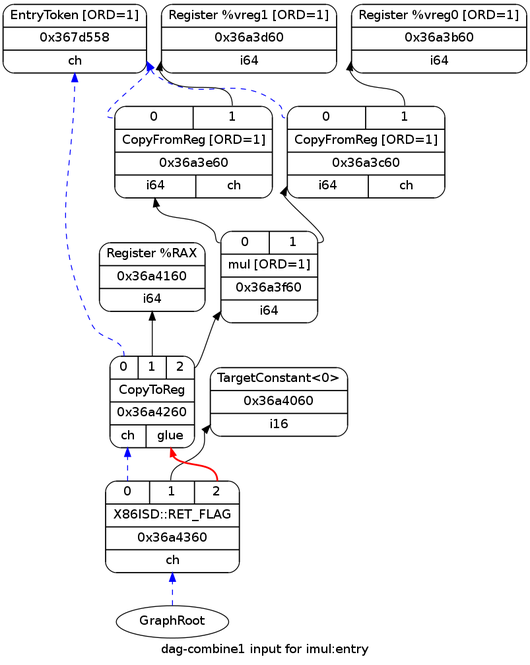
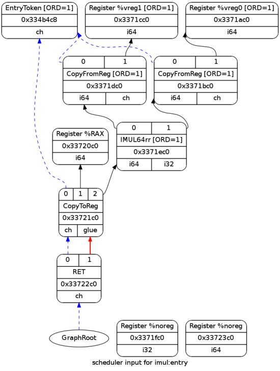

In a previous article, I followed the various incarnations an instruction takes when it's being compiled from the source language to machine code in LLVM. The article briefly mentioned a lot of layers within LLVM, each of which is interesting and non trivial.
Here I want to focus on one of the most important and complex layers - the code generator, and specifically the instruction selection mechanism. A short reminder: the task of the code generator is to transform the high-level, mostly target-independent LLVM IR into low-level, target dependent machine language. Instruction selection is the process wherein the abstract operations in IR are mapped to concrete instructions of the target architecture.
This article will follow a simple example to show the instruction selection mechanism in action (ISel in LLVM parlance).
Getting started: a DAG for simple multiplication
Here's some sample IR:
define i64 @imul(i64 %a, i64 %b) nounwind readnone {
entry:
%mul = mul nsw i64 %b, %a
ret i64 %mul
}
It's compiled with Clang (-emit-llvm option) on a x64 machine from this C code:
long imul(long a, long b) {
return a * b;
}
The first thing done by the code generator is convert the IR into a selection DAG representation. This is the initial DAG, right after it's built:
There's really not much interesting going on here, and all the types are legal for the target architecture; therefore, this is also the DAG that reaches the instruction selection stage.
Patterns for instruction selection
Instruction selection is arguably the most important part of the code generation phase. Its task is to convert a legal selection DAG into a new DAG of target machine code. In other words, the abstract, target-independent input has to be matched to concrete, target-dependent output. For this purpose LLVM uses an elaborate pattern-matching algorithm that consists of two major steps.
The first step happens "offline", when LLVM itself is being built, and involves the TableGen tool, which generates the pattern matching tables from instruction definitions. TableGen is an important part of the LLVM eco-system, and it plays an especially central role in instruction selection, so it's worthwhile to spend a couple of minutes talking about it (there's also official documentation, starting with TableGen fundamentals).
The problem with TableGen is that some of its uses are so complex (and instruction selection, as we'll shortly see, is one of the worst offenders) that it's easy to forget how simple the idea is in its core. The LLVM developers realized a long time ago that a lot of repetitive code has to be written for each new target. Take a machine instruction, for instance. An instruction is being used in code generation, in the assembler, in the disassembler, in optimizers, and in many other places. Each such use results in a "table" that maps instructions to some piece of information. Wouldn't it be nice if we could just define all instructions in one central place which collects all the interesting information we need about them and then generate all the tables automatically? This is precisely what TableGen was born to do.
Let's examine an instruction definition relevant to this article (taken from lib/Target/X86/X86InstrArithmetic.td and reformatted a bit):
def IMUL64rr : RI<0xAF, MRMSrcReg, (outs GR64:$dst),
(ins GR64:$src1, GR64:$src2),
"imul{q}\t{$src2, $dst|$dst, $src2}",
[(set GR64:$dst, EFLAGS,
(X86smul_flag GR64:$src1, GR64:$src2))],
IIC_IMUL64_RR>,
TB;
If this looks like gibberish, don't worry, that's the right first impression to have. To factor out common code and fanatically preserve DRY, TableGen grew some advanced features like multiple inheritance, a form of templating and more; all of these make definitions somewhat difficult to understand at first. If you want to see the "naked" definition of IMUL64rr, you can run this from the root of the LLVM source tree:
$ llvm-tblgen lib/Target/X86/X86.td -I=include -I=lib/Target/X86
The 13.5 MB output only contains simple defs - table entries from which TableGen backends can take what they need. The def for IMUL64rr has something like 75 fields. But we'll only focus on the ones we need for this article, and the condensed description pasted above will do.
The most important field for our discussion is the sixth template argument in the def above:
[(set GR64:$dst, EFLAGS,
(X86smul_flag GR64:$src1, GR64:$src2))],
This is the pattern on which the IMUL64rr can be selected. It's essentially an s-expression describing the DAG path that will be matched. In this case it roughly means: an X86ISD::SMUL node (this is concealed behind the X86smul_flag definition) with two 64-bit GPR (General Purpose Register) arguments is invoked and returns two results - one assigned to a destination GPR and the other to the status flag register [1]. When the automatic instruction selection sees such a sequence in the DAG, it will match it to the said IMUL64rr instruction.
A careful reader will, at this point, notice that I'm cheating a little bit. If the node matched by this pattern is X86ISD::SMUL, then how did it match the DAG shown above which has an ISD::MUL node? Indeed, it didn't. I will show the pattern that actually matches the DAG shortly, but I felt it's important to demonstrate the instruction definitions with patterns, to enable me to discuss how all patterns are mashed together later.
So what is the difference between ISD::MUL and X86ISD::SMUL [2] ? In the former, we don't care about the actual flags affected by the multiplication, while in the latter we do. In the case of multiplication in C, we usually don't care about the flags affected, hence ISD::MUL is selected. But LLVM provides some special intrinsics such as llvm.smul.with.overflow in which an overflow flag can be returned from the operation. For these (and possibly other uses), the X86ISD::SMUL node exists [3].
What, then, actually matches the ISD::MUL node here? This pattern from lib/Target/X86/X86InstrCompiler.td:
def : Pat<(mul GR64:$src1, GR64:$src2),
(IMUL64rr GR64:$src1, GR64:$src2)>;
This is an anonymous TableGen record that defines a "pattern" which is detached from any specific instruction. The pattern is simply a mapping from a DAG input to DAG output, the latter containing a selected instruction. We don't care how this mapping is called, so TableGen lets us define anonymous instances. In this case, the pattern should be fairly straightforward. Here's an interesting snippet from include/llvm/Target/TargetSelectionDAG.td, where the Pattern class (and its Pat specialization) is defined:
// Selection DAG Pattern Support.
//
// Patterns are what are actually matched against by the target-flavored
// instruction selection DAG. Instructions defined by the target implicitly
// define patterns in most cases, but patterns can also be explicitly added when
// an operation is defined by a sequence of instructions (e.g. loading a large
// immediate value on RISC targets that do not support immediates as large as
// their GPRs).
//
class Pattern<dag patternToMatch, list<dag> resultInstrs> {
dag PatternToMatch = patternToMatch;
list<dag> ResultInstrs = resultInstrs;
list<Predicate> Predicates = []; // See class Instruction in Target.td.
int AddedComplexity = 0; // See class Instruction in Target.td.
}
// Pat - A simple (but common) form of a pattern, which produces a simple result
// not needing a full list.
class Pat<dag pattern, dag result> : Pattern<pattern, [result]>;
The large comment at the top of this snippet is helpful, but it describes an exactly opposite situation of what we're observing for IMUL64rr. In our case, the pattern defined within the instruction is actually the more complex one, while the basic pattern is defined outside with a Pattern.
The pattern matching mechanism
TableGen descriptions of target instructions support numerous pattern kinds. We've examined patterns implicitly defined within instruction definitions and patterns explicitly defined as stand-alones. In addition there are also "complex" patterns that specify a C++ function to be called, and "pattern fragments" that can contain arbitrary snippets of C++ code that do custom matching. If you're interested, these pattern types are somewhat described in the comments within include/llvm/Target/TargetSelectionDAG.td.
Mixing up C++ code in TableGen works because the final result of the TableGen run (with the specific DAG ISel backend) is a C++ method that gets embedded into a target's implementation of the SelectionDAGISel interface.
To be more specific, the sequence is:
- The generic SelectionDAGISel::DoInstructionSelection method calls Select per DAG node.
- Select is an abstract method, implemented by the targets. For example X86DAGToDAGISel::Select.
- The latter intercepts some nodes for manual matching, but delegates the bulk of the work to X86DAGToDAGISel::SelectCode.
- X86DAGToDAGISel::SelectCode is auto-generated by TableGen [4], and contains the matcher table, followed by a call to the generic SelectionDAGISel::SelectCodeCommon, passing it the table.
So what is the matcher table? Essentially, it's a "program" written in a sort of a "bytecode" specific for instruction selection. To enable flexible pattern matching while staying efficient, TableGen munges all the patterns together and generates a program that, given a DAG mode, figures out which pattern it matches. SelectionDAGISel::SelectCodeCommon serves as the interpreter for this bytecode.
Unfortunately, the bytecode language for pattern matching is not documented anywhere. To understand how it works, there's no substitute to looking at the interpreter code and at the generated bytecode for some backend [5].
Example: matching our sample DAG node
Let's examine how the ISD::MUL node in our sample DAG is matched. For this purpose, it's very useful to pass the -debug option to llc, which makes it dump detailed debugging information throughout the code generation process. In particular, the selection process for each DAG node can be traced. Here's the relevant portion for our ISD::MUL node:
Selecting: 0x38c4ee0: i64 = mul 0x38c4de0, 0x38c4be0 [ORD=1] [ID=7]
ISEL: Starting pattern match on root node: 0x38c4ee0: i64 = mul 0x38c4de0, 0x38c4be0 [ORD=1] [ID=7]
Initial Opcode index to 57917
Match failed at index 57922
Continuing at 58133
Match failed at index 58137
Continuing at 58246
Match failed at index 58249
Continuing at 58335
TypeSwitch[i64] from 58337 to 58380
MatchAddress: X86ISelAddressMode 0x7fff447ca040
Base_Reg nul Base.FrameIndex 0
Scale1
IndexReg nul Disp 0
GV nul CP nul
ES nul JT-1 Align0
Match failed at index 58380
Continuing at 58396
Match failed at index 58407
Continuing at 58516
Match failed at index 58517
Continuing at 58531
Match failed at index 58532
Continuing at 58544
Match failed at index 58545
Continuing at 58557
Morphed node: 0x38c4ee0: i64,i32 = IMUL64rr 0x38c4de0, 0x38c4be0 [ORD=1]
ISEL: Match complete!
=> 0x38c4ee0: i64,i32 = IMUL64rr 0x38c4de0, 0x38c4be0 [ORD=1]
The indices mentioned here refer to the matcher table. You can see them in a comment at the beginning of each line in the generated X86GenDAGISel.inc file. Here's the beginning of that table [6]:
// The main instruction selector code.
SDNode *SelectCode(SDNode *N) {
// Some target values are emitted as 2 bytes, TARGET_VAL handles
// this.
#define TARGET_VAL(X) X & 255, unsigned(X) >> 8
static const unsigned char MatcherTable[] = {
/*0*/ OPC_SwitchOpcode /*221 cases */, 73|128,103/*13257*/, TARGET_VAL(ISD::STORE),// ->13262
/*5*/ OPC_RecordMemRef,
/*6*/ OPC_RecordNode, // #0 = 'st' chained node
/*7*/ OPC_Scope, 5|128,2/*261*/, /*->271*/ // 7 children in Scope
At position 0 we have a OPC_SwitchOpcode operation, which is kind of a huge switch table on the node opcode. It's followed by a list of cases. Each case begins with its size (so that the matcher knows where to go if matching the case fails), and then the opcode. For example, as you can see in the listing above, the first case in the table is for opcode ISD::STORE, and its size is 13257 (the size is encoded in a special variable-length-encoding since the table is byte-based).
Looking at the debug output, the matching of our MUL node starts at offset 57917. Here's the relevant part of the table:
/*SwitchOpcode*/ 53|128,8/*1077*/, TARGET_VAL(ISD::MUL),// ->58994
/*57917*/ OPC_Scope, 85|128,1/*213*/, /*->58133*/ // 7 children in Scope
So, as expected, this is the switch case with ISD::MUL as the opcode. The matching for this case starts with OPC_Scope, which is an instruction to the interpreter to push its current state. If something fails within the scope, the state can be then restored to proceed with matching the next cases. In the snippet above, if matching fails in the scope, it will proceed in offset 58133.
You can see this happening in the debug output:
Initial Opcode index to 57917
Match failed at index 57922
Continuing at 58133
At 57922, the interpreter tries to match the child of the node to a ISD::LOAD (meaning - multiply with in-memory argument), fails, and jumps to 58133 as the scope dictates. Similarly, the rest of the matching process can be traced - following the debug output and the matching table as a reference. Something interesting happens at offset 58337 though. Here's the relevant table part:
/*58337*/ OPC_SwitchType /*2 cases */, 38, MVT::i32,// ->58378
/*58340*/ OPC_Scope, 17, /*->58359*/ // 2 children in Scope
/*58342*/ OPC_CheckPatternPredicate, 4, // (!Subtarget->is64Bit())
/*58344*/ OPC_CheckComplexPat, /*CP*/3, /*#*/0, // SelectLEAAddr:$src #1 #2 #3 #4 #5
/*58347*/ OPC_MorphNodeTo, TARGET_VAL(X86::LEA32r), 0,
1/*#VTs*/, MVT::i32, 5/*#Ops*/, 1, 2, 3, 4, 5,
// Src: lea32addr:i32:$src - Complexity = 18
// Dst: (LEA32r:i32 lea32addr:i32:$src)
This is the result of a complex pattern described above. SelectLEAAddr is a C++ method (defined by the X86 backen's ISel implementation) and it gets invoked to try and match the node operand to a LEA [7]. The debug printout that follows comes from that method, and as we can see, eventually fails.
Finally, where the interpreter reaches offset 58557, the match succeeds. Here's the relevant table part:
/*58557*/ /*Scope*/ 12, /*->58570*/
/*58558*/ OPC_CheckType, MVT::i64,
/*58560*/ OPC_MorphNodeTo, TARGET_VAL(X86::IMUL64rr), 0,
2/*#VTs*/, MVT::i64, MVT::i32, 2/*#Ops*/, 0, 1,
// Src: (mul:i64 GR64:i64:$src1, GR64:i64:$src2) - Complexity = 3
// Dst: (IMUL64rr:i64:i32 GR64:i64:$src1, GR64:i64:$src2)
Simply put, after it fails matching a bunch of optimizations and special cases, the matcher finally uses a generic integer-multiply between 64-bit registers, which is matched to the IMUL64rr machine instruction.
If it appears from the trace that the instruction selector works hard to find a suitable instruction, that is true. To generate good code, some work has to be done to try and match various optimized sequences before falling back to generic ones. In the next part of the article, I will show some more advanced cases of instruction selection with optimization.
The final code
This is how the DAG looks after instruction selection:
Since the entry DAG was pretty basic, this one is very similar; the main difference is that the multiplication and return nodes were selected to actual instructions.
If you remember from the life of an instruction in LLVM article, the instruction goes through a couple of additional incarnations after being matched by the instruction selector. The final code that gets emitted is:
imul: # @imul
imulq %rsi, %rdi
movq %rdi, %rax
ret
imulq is the assembly (GAS flavor) representation of X86::IMUL64rr. It multiplies the function's arguments (according to the AMD64 ABI, the first two integers come in %rsi and %rdi); then the result is moved to the return register - %rax.
Conclusion
This article provided an in-depth peek into the instruction selection process - a key part of the LLVM code generator. While it uses a relatively simple example, it should contain sufficient information to gain some initial understanding of the mechanisms involved. In the next part of the article, I will examine a couple of additional examples through which other aspects of the code generation process should become clearer.

| [1] | Although the status flags are "implicit" on x86 (there's no explicit register you can work with), LLVM treats it as explicit to aid the code generation algorithms. |
| [2] | X86ISD::SMUL is the X86-specific lowering of the generic ISD::SMULO node. |
| [3] | You may have a "oh my, why is this so complex?" reaction at this point. The TL;DR; answer is "compilers are hard, let's go fishing". A longer rationale would be: the x86 instruction set is very large and complex. Moreover, LLVM is a compiler with many (quite different) targets and much of its machinery is thus engineered to be target-independent. The result is inherent complexity. To put it differently - the x86 TableGen definitions are about 20 KLOC in size. Add to that another 20 KLOC or so of custom C++ lowering code and compare to the Intel architecture manual which contains 3,000 pages or so. In terms of Kolmogorov complexity, this isn't very bad :-) |
| [4] | It's generated into <BUILD_DIR>/lib/Target/X86/X86GenDAGISel.inc, a file that's #included by lib/Target/X86/X86ISelDAGToDAG.cpp. |
| [5] | If you want to understand how this bytecode is generated from the TableGen pattern definitions, you also need to look inside the TableGen DAG ISel backend. |
| [6] | Note that the values in this table are relevant to the version of LLVM I have built for this example (r174056). Changes in X86 pattern definitions may result in different numbering, but the principle is the same. |
| [7] | Some multiplications can be optimized to use the faster LEA instruction. |